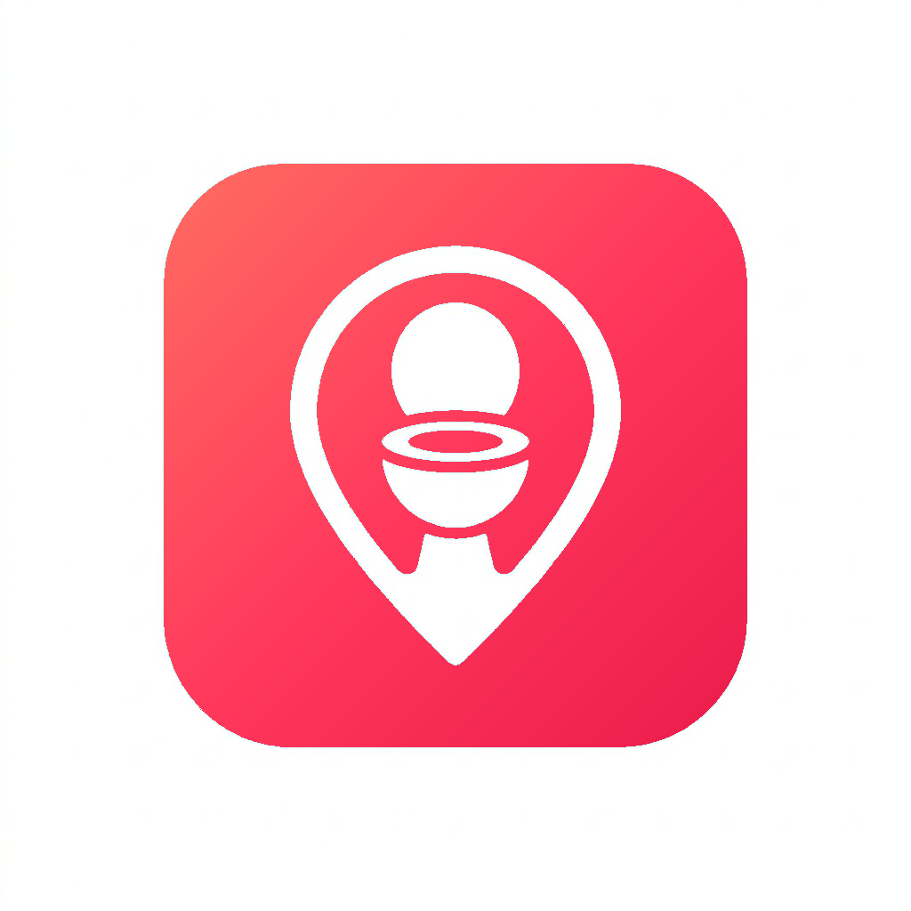

REAL-TIME TOILET FINDER
급할 때
가장 먼저
찾는 앱
🇰🇷 한국어
🇺🇸 English
📍 내 주변 화장실 찾기
✈️ 해외 여행 중이신가요?
지도를 누르면 해당 나라 화장실로 이동해요
🚻 78,000+ 화장실 데이터 · 출처
ⓘ
Powered by 테크셀
문의 :
texasman@naver.com
🔍
지역명 또는 주소 검색
🇰🇷
🇬🇧
🇰🇷 한국
전체
🚻 공중화장실
🏢 개방화장실
위치 확인 중...
📍
0
개 발견
화장실 검색 중...
＋
－
📍
공중화장실
개방화장실
Google 개방
ⓘ 데이터 출처
←
검색
빠른 선택